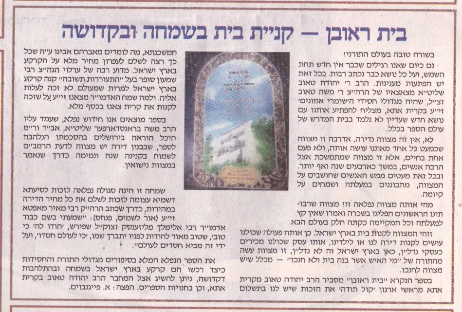
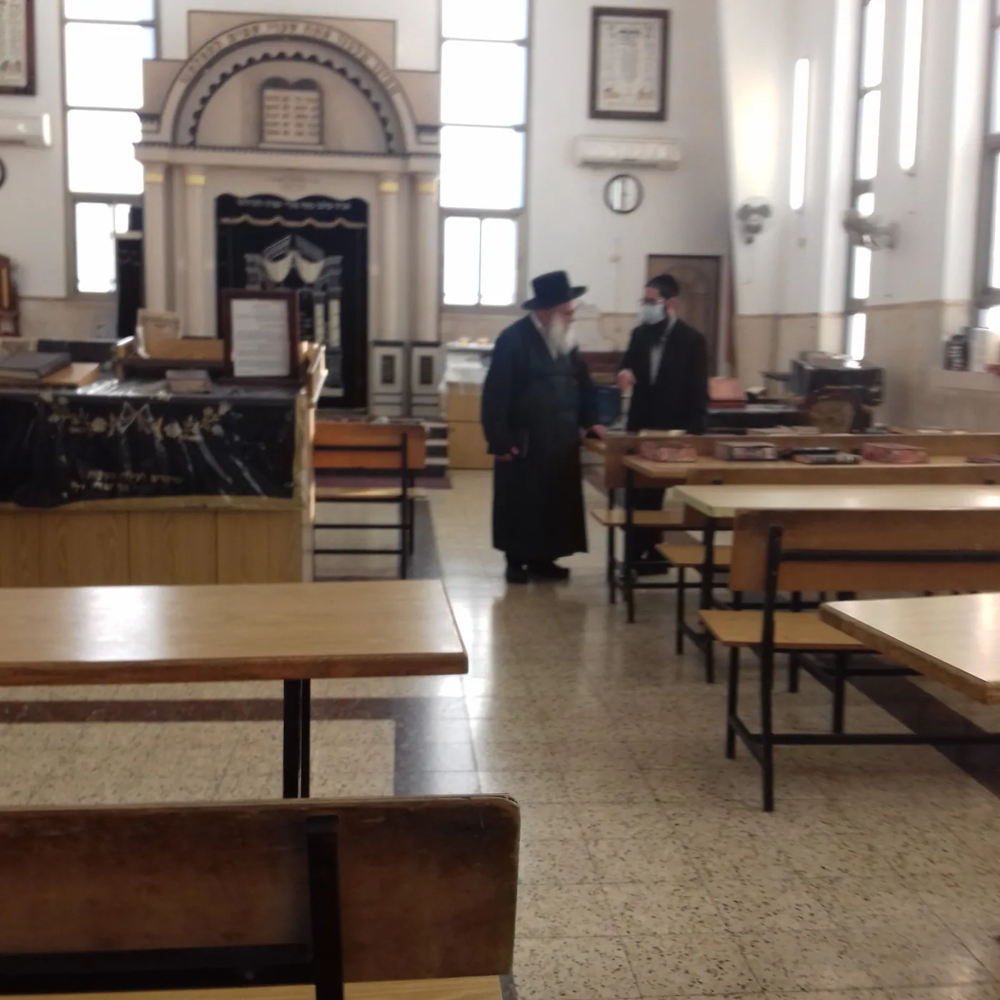
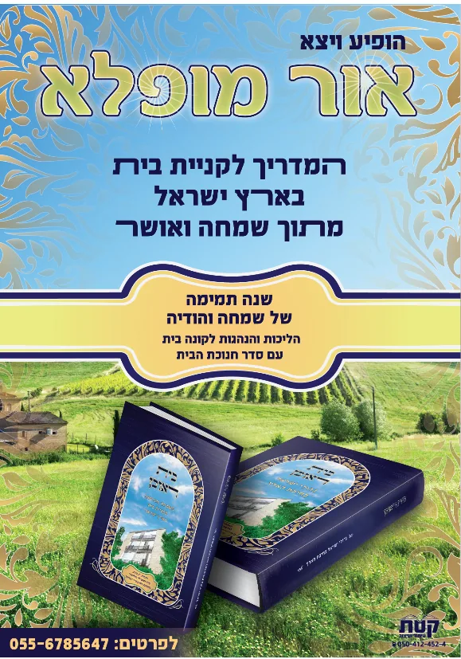

הלכות, הנהגות ועובדות מגדולי ישראל על המצווה שמן הסתם תהיה היקרה ביותר מבין כל מצוותיך אי פעם - קניית בית בארץ ישראל.
מה זה הספר בית ראובן?
בית ראובן - הוא מדריך לקנית בית - בשמחה
- ספר חדש ראשון מסוגו בעולם על המעלה בקנית בית בארץ - יתן לך שמחה ואושר בקניה, תבין לראשונה בחייך איזה מצווה אתה מקיים בקנית בית.
- ספר על הלכות והנהגות חנוכת הבית - יתן לך הדרכה ברורה כיצד להתנהג בסעודת חנוכת הבית
- בספר תמצא סדר לימוד לחנוכת הבית קצר וקולע - כל האורחים יהנו מלימוד פורה ומעניין.
- בספר תלמד על ארץ ישראל בצורה חרדית - להבין את ערכה של ישיבת ארץ ישראל ללא השקפות ציוניות פסולות.
- ספר הכולל תפילות לרכישת בית - יתן לך המון הצלחה ושפע בכל הקניה.
- ספר הכולל סיפורים מרתקים כיצד גדולי ישראל קנו נדל"ן - תפנים שאתה לא נכנסת לעיסקה מתוסבכת, אלא למצווה יקרה.
- ספר הכולל מראי מקומות לסוגית חנוכת הבית - יתן לך גישמע'ק אמיתי בכל ההכנות.
- ספר הכולל קיצור הלכות קנית בית וחנוכת הבית - גם אם אין לך זמן, תוכל ללמוד ולדעת את העיקר בכמה רגעים קטנים.
- ספר עם עריכה גרפית נעימה מאוד - יתן לך קריאה נוחה ורגועה.
- ספר כתוב ברמה קצת עיונית - מתאים יותר לאנשים הרוצים ללמוד דברים לעומק.

מה התוכן של הספר?
הקדמה:
שער א: מעלת קנית קרקע בא"י
שער ב: מצוות קנית בית בא"י
שער ג: מצוות שנה של שמחה
שער ד: מצוות סעודת חנוכת הבית
שער ה: סדר חנוכת הבית
שער ו: מילואים ושו"ת
שער ז: מצוות נטיעת אילנות בא"י
שער ח: סיפורים על ראובן ז"ל

לראות את ההסכמות הנלהבות של פוסקים רבנים ודינים - לחצו כאן
לעיון בקיצור של הספר - לחצו כאן
מחיר הספר 30 ש"ח כולל משלוח עד הבית - חינם - לחץ כאן לתשלום ולמלאות פרטים למשלוח
🏡🏠🏡🏠🏡🏠🏡🏠🏡🏠🏡🏠🏡🏠🏡🏠🏡🏠🏡🏠🏡🏡🏠🏡🏠🏡🏠🏡🏠🏡🏠🏡🏠🏡🏠🏡🏠🏡🏠🏡🏠🏡
 מחלקים בית ראובן - בחנוכת רמת בית שמש ד
מחלקים בית ראובן - בחנוכת רמת בית שמש ד
סיפור ישועה בזכות הספר בית ראובן, צפיה.
סיפור ישועה בזכות הספר בית ראובן, אודיו.

ממי אני קונה?
כתבות על הספר והמחבר בעיתונים החרדים
-
כתבה בבטאון קול ברמה על הספר בית ראובן
כתבה שניה על הספר בקול ברמה.pdf
כתבה בעיתון המודיע

מחיר הספר 30 ש"ח כולל משלוח עד הבית - חינם
לחץ כאן לתשלום ולמלאות פרטים למשלוח
מרכיבי המוצר
ייעוד:
הספר מיועד בעיקר לאברכים שרוצים להבין היטיב את המצווה שיש בקנית בית בארץ ישראל.
גם אנשים עסוקים ונשים יוכלו להנות ממנו, מקיצור ההלכות, הנהגות ועובדות, וסדר חנוכת הבית.
נתונים טכניים:
הספר עם כריכה רכה מכיל 200 עמודים, עשרה פרקים, בכתב גדול וקריא.
שם הספר:
למה קוראים לספר בית ראובן?
'בית ראובן' - ע"ש ראובן אוסטפלד ז"ל,
ראובן היה יהודי גלמוד, שהחיים לא במיוחד זרחו לו, אבל הוא חיפש כל חייו כיצד להאיר את החיים, ולחפש תמיד כיצד ניתן לשמוח.
לאחר פטירתו רצה חבירו להשאיר לו שארית בארץ, וכך עלה הרעיון להוציא ספר לע"נ.
ראובן החליט שנה לפני פטירתו שחלק מהבית שבו גר יעבור אחרי פטירתו ליהודי שתורתו אמונתו שקרא את בתו ע"ש אמו המאמצת.
אותו יהודי שקיבל את 'בית ראובן' תרם חלק גדול מהוצאות הספר לע"נ, ולכן מה נאה לקרוא לספר - בית ראובן.
איך נולד המוצר?
במשך שנים הפריע לי מאוד שאין ספר על המצווה היקרה ביותר והארוכה ביותר בחיי היהודי בן זמננו - קנית בית בארץ ישראל.
זה לא רק שאין ספר הציבור אפילו לא יודע שיש כאן מצווה, ואין לך דבר הזקוק לסע"ד גדולה יותר מקנית דירה.
ביקשתי מכמה וכמה תלמידי חכמים לכתוב חוברת/ספר על הנושא, אבל לא יצא מזה דבר.
בהתחלה כתבתי כמה פרקים בעלונים שונים, על המעלה בקנית בית, ועל המצווה לשמוח לאחר שקונים בית.
לאחר שנפטר ידידנו ראובן אוסטפלד ז"ל, ביקש ממני חברו הטוב בנימין רוזנפלד שיחי' להוציא דבר לעילוי נשמתו,
אמרתי לו ישר דבר טוב להוציא זה ספר על המצווה לקנות בית בארץ ישראל.
כך ניגשתי למלאכה, התחלתי מהחומר הקטן שהיה בידי, ואספתי חומר מכאן ומכאן, שאלתי תלמידי חכמים שאלות בנושאים אלו, ודנתי הרבה בדבריהם,
חיפשתי בכל מקום שרק אפשר למצוא חומר בנושאים אלו, עד שבחסדי שמים נוצר ספר שלם – מלא ברכת ה'.
ועוד היד נטויה בקרוב להוציא מהדורה מורחבת יותר.
מי עומד מאחורי הספר?
הרב יהודה טאוב שליט"א מרבני ארגון קול תודה – ארגון להפצת ההודיה לה' בארץ ישראל.
לארגון יש כ 70 סניפים ברחבי הארץ, בהם נמכרים מוצרים רבים הגורמים ליהודים להודות לה'.
פנקס הודיה לה', מזמור לתודה המבואר, דיסקים על מזמור לתודה.
אלפי אנשים מאזינים יום יום לשיעורים בקו קול תודה. וכן בקו יש סיפורים רבים.
מסופר על המשגיח ר' דב יפה שהתעניין כמה וכמה פעמים על בנין שבנו מול אכסנייתו, והיה לו מכך הנאה ושמחה גדולה. ואמר: אני שמח שמקיימים מצות ישוב ארץ ישראל! הסכמה של ר' דה יפה - לספר הבית כמקדש של המחבר |
אם אתה רוצה להפוך את קנית הבית לחוויה של שמחה של מצווה,
אז קנה לך את הספר 'בית ראובן' ותתחיל ללמוד בו קצת בכל יום.
מחיר הספר 30 ש"ח כולל משלוח עד הבית - חינם
לחץ כאן לתשלום ולמלאות פרטים למשלוח

האדמו"ר ממאקווא שליט"א ביחד עם הרב המחבר בנוגע לאחד מהחיבורים.
מה נלמד בחוברת?
את הנושא הזה אני מאוד רוצה להכניס לציבור בני התורה
להבין על איזה מצווה מדובר כאן?
הרי לא נוסף שום דבר לארץ ישראל
היה אצל יהודי ונשאר אצל יהודי.
להגיד לשם יחוד...
ולא להבין בכלל איזה מצווה עושים
זה מצווה מאוד חלשה....
וגם ברגש הלב לא מרגישים שום שמחה
וכבר כתב החזו"א שעיקר שכר המצווה הוא על השמחה בה.
צריך - לעורר את המחשבה של האברכים להבין
שהם נגשים לפרויקט גדול בחיים
משקיעים המון מאמצים גשמיים
והאם קצת משקעים בללמוד את הסוגיה
ויש כאן סוגיה נפלאה...

עדויות משתמשים
מספר הרב שמואל פולק – מחיפה
שנים חיפשתי דירה בחיפה, כל פעם זה לא הצליח, או לא היה לי את האומץ להחליט זהו קונים.
יום אחד הגיע אלי הספר 'בית ראובן', ישבתי וקראתי אותו כל הלילה,
התרגשתי התלהבתי מהמצווה העצומה שיש בקנית בית, והחלטתי הגיע הזמן לקיים מצווה זו.
כעבוד 36 שעות זכיתי לחתום על דירת חלומות נפלאה גדולה ויפה בחיפה,
שכן אם זה מצווה צריך לעשות אותה כראוי ובהידור.